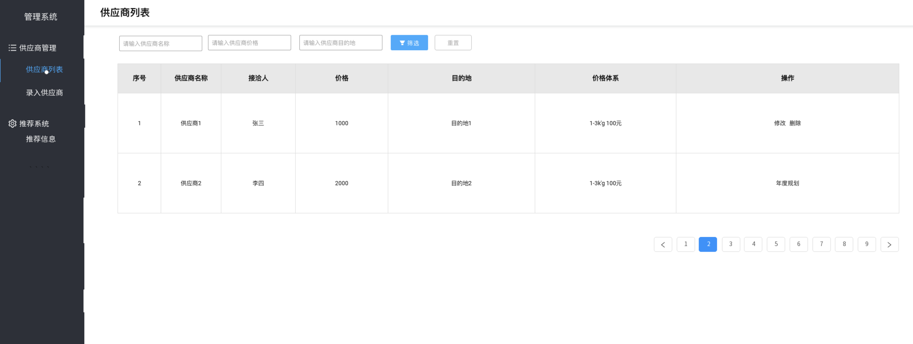
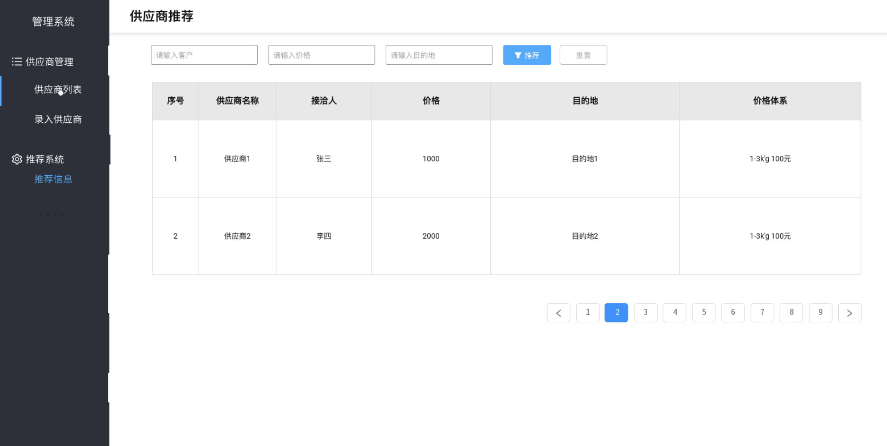

..
万域达全链路系统V1.0
graph TB
subgraph 回款
计算用户额外成本-->用户回款
end
subgraph 供应商
供应商订单确认-->边境,站台等订单确认-->供应商运输货物
end
subgraph 接收客户需求
客户需求输出:成本,目的地和运输物品-->销售提供运输方案,报价
end
1.0版本的需求集中在需求环节
graph TB
客户需求输出:成本,目的地和运输物品-->销售提供运输方案
V1.0需要做的核心的一点是:
系统可对销售提出指导性的建议, 可以在客户提出需求后, 搜索最优的供应商链路
基于该目的，V1.0 的系统产出包括:
-
智能化的供应商数据收集
a. 对供应商数据进行建模, 周期性地进行数据收集, 减少销售录入信息的情况
b. 客户信息和订单信息收集, 包括目的地, 额外成本信息等
-
供应商推荐
a. 根据客户的目的地信息, 推荐可选择的供应商(精确到国家)
b. 根据用户的历史记录等, 提示销售改用户的消费水平, 信用度信息
- 系统搭建(1天)
- 项目初始化, 框架搭建
- 环境部署和上线
- 供应商管理(4天)
- 新增/编辑供应商信息
- 供应商的数据自动收集
- 供应商信息展示
- 供应商推荐(3天)
- 供应商推荐页面
- 供应商推荐算法
- 算法调优和权重设计
- 其他(3天)
- 登录, 账号管理等功能
- 原有系统中的数据(客户, 供应商)迁移
供应商
该部分包括 自动录入, 销售录入 和 供应商录入 三部分
graph LR
B(供应商数据)
B -->|自动录入| D[抓取供应商提供的价格,目的地信息]
B -->|自动录入| E[定期发送邮件,提供录入信息的链接地址]
B -->|销售录入| F[后台录入]
B -->|供应商录入| G[销售发送链接给供应商,供应商进行录入]
下图为 后台录入 的示例

无论是那种形式的录入，最终都会规整到后台页面中

推荐系统
graph LR
B(推荐维度)
B -->|目的地| D[计算目的地和供应商的关系]-->提供最优的供应商方案
B -->|价格| E[计算在价格范围内的价格最低的供应商]-->提供最优的供应商方案
B -->|客户| F[提示客户的历史信息, 并给出客户的特征画像]-->提供最优的供应商方案
